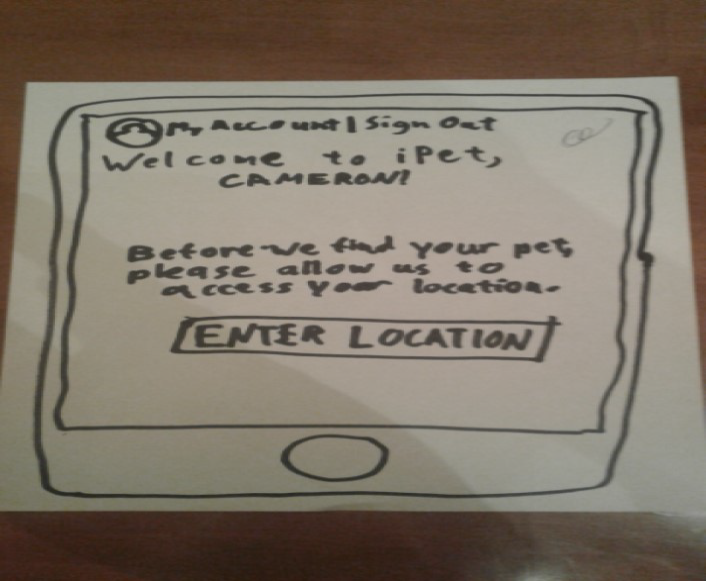

Problem Statement: Finding a Pet

Users who experience emotional distress or just want companionship need to find a pet that is tailored to their personality.
Affinity Diagram: Finding a Pet

My group and I discussed various categories that might have an effect on our app.
Pet App Personas: Finding a Pet
Four personas of the most common users of our app.
Storyboards: Finding a Pet
Four comic strips that illustrate the different needs that our app fulfills.
Sketches: Finding a Pet
Each member of our team created sketches for possible app solutions.
Paper Prototype: Finding a Pet
This is a video showcasing a paper prototype that gives the basic layout of our app.
Usability Testing Script: Finding a Pet
A document that gives a specific scenario, tasks, and feedback from the usability test subject.
Low-Fidelity Prototype: Finding a Pet

An early prototype that demostrates the app's layout and how it works.
High-Fidelity Prototype: Finding a Pet

A more-refined prototype with improved design elements.
Prototype Presentation: Finding a Pet
A presentation of our app to potential investors.